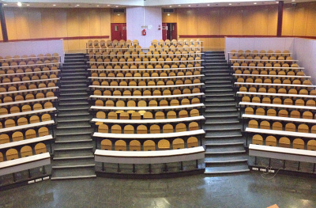
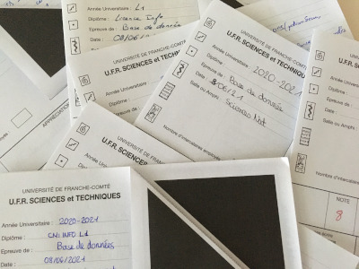
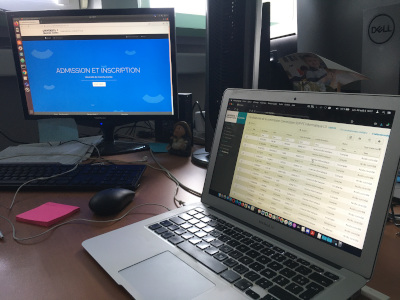

Nos scénarios sont jouables entre 2 et 6 joueurs. La difficulté de la salle s'adapte au nombre de joueurs.
Tous nos scénarios sont proposés sur 1h de temps de jeu, hors briefing préalable à la partie, et débriefing en fin
de partie.
Pas de panique ! Si vous bloquez, le maître de jeu pourra vous donner quelques indices pour vous débloquer.
Si vous ne finissez pas dans le temps imparti, vous pourrez tout de même terminer la partie, avec son aide
du maître de jeu.
Retrouvez ci-dessous les trois scénarios actuellement proposés.
Scénario 1 : Panique en amphi A

Convoqué pour un examen de langages du web, vous avez complètement oublié les documets autorisés
mémento HTML et CSS, qui vous aideront à réussir l'épreuve. Vous avez 1h pour les retrouver (et 2h
pour composer).
Manipulation
Déduction
Recherche
Réussite
★★★★☆
★★★☆☆
★★★☆☆
60%
Scénario 2 : La copie perdue de Fabien Peureux

Alerte générale ! Suite à l'examen de Bases de Données, les copies d'examen corrigées ont été
acheminées jusqu'au secrétariat pour le jury. Toutes ? Non. Une copie s'est perdue dans le bureau de Fabien Peureux
lors du transfert et les notes doivent être remontées pour le jury dans une heure. Retrouvez-les vite !
Manipulation
Déduction
Recherche
Réussite
★★☆☆☆
★★★★☆
★★★★★
30%
Scénario 3 : Le casse du bureau du Directeur

La vie est mal faite. Malgré vos excellents états de service en tant qu'artisant
forgeron et vos nombreuses lettres de recommandation, le directeur de l'EAD a refusé votre candidature en Licence
Informatique. Infiltrés par un complice dans son bureau lors de sa pause déjeuner, vous avez une heure pour accéder
à l'application eCandidate et faire accepter votre candidature avec le compte du grand chef.